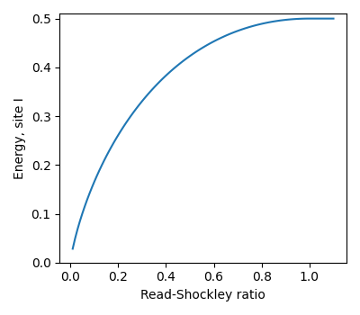

Syntax:
app_style style Q crystal theta_cut
Examples:
app_style potts/quaternion 6400 cubic app_style potts/quaternion 10000 hcp 25.0
Description:
This is an on-lattice application which evolves a Q-state Ising model or Potts model, where each lattice site has a spin value from 1 to Q. Sites flip their spin as the model evolves.
This Potts variant is designed to incorporate the effects of crystalline orientation into growth models, allowing more detailed and realistic simulations of microstructure evolution in Cubic and HCP polycrystals. Emulating crystalline orientation requires two additions to the standard Potts model: a choice of a reference crystal symmetry, and calculation of grain boundary energy based upon relative orientation differences between adjacent grains/sites.
The Hamiltonian representing the energy of site i is as follows:
Hi = (1/2) Sum_j e_ij
where Sum_j is a sum over all the neighbor sites j for site i and e_ij is the computed bond energy between sites i and j. Bond energy between sites i and j is computed using the Read-Shockley relation and the angular disorientation between sites i and j. The energy of the entire system is the sum of Hi over all sites.
The user selects either cubic or hcp crystal symmetry. To represent crystal orientation, each site i is initialized with a randomly generated unit quaternion, qi. The app calculates the disorientation angle theta_ij between two neighboring sites i and j using quaternions for the chosen crystal symmetry. The disorientation angle theta_ij is used to calculate grain boundary energy and evolve microstructure in exactly the same way the potts model is used to simulate grain growth and evolution without crystalline orientation.
More information on the calculation of theta_ij can be found in the Mackenzie and Handscomb papers (citations 1, 2, and 3 below). Python scripts in tools/potts_quaternion use the exact header files spparks uses; these python scripts can be used to verify disorientation distributions for random cubic and hcp orientations.
The default value for the low-angle cut-off theta_cut is 15.0 degrees, a commonly-used cutoff angle for cubic materials. To specify the low-angle cut-off different from the default, add the optional input value theta_cut. A maximum disorientation angle exists for each crystal symmetry: 62.7 degrees for cubic and 93.8 degrees for hcp. If the user's input theta_cut is greater than these maxima, the simulation will throw an error. A value theta_cut=0 is disallowed and does not make sense for the Read-Shockley model.
The disorientation angle is used to calculate low-angle grain boundary energies using the Read-Shockley equation (citation 4). The plot below shows how grain boundary energy between sites ij varies with disorientation angle according to the Read-Shockley model.
Restrictions: none
Related commands:
app_style potts, app_style ising
Default:
theta_cut = 15.0
[1] Mackenzie, J. K., and M. J. Thomson. "Some statistics associated with the random disorientation of cubes." Biometrika 44, no. 1-2 (1957): 205-210. DOI: 10.2307/2333253
[2] Mackenzie, J. K. "Second paper on statistics associated with the random disorientation of cubes." Biometrika 45, no. 1-2 (1958): 229-240. DOI: 10.2307/2333059
[3] Handscomb, D.C. "On the Random Distribution of two Cubes", Canadian Journal of Mathematics , Volume 10 , 1958 , pp. 85 - 88 DOI: https://doi.org/10.4153/CJM-1958-010-0
[4] Read, W.T. and Shockley, W. "Dislocation models of crystal grain boundaries." Phys. Rev. 78, no. 3 (1950): 275. DOI: 10.1103/PhysRev.78.275